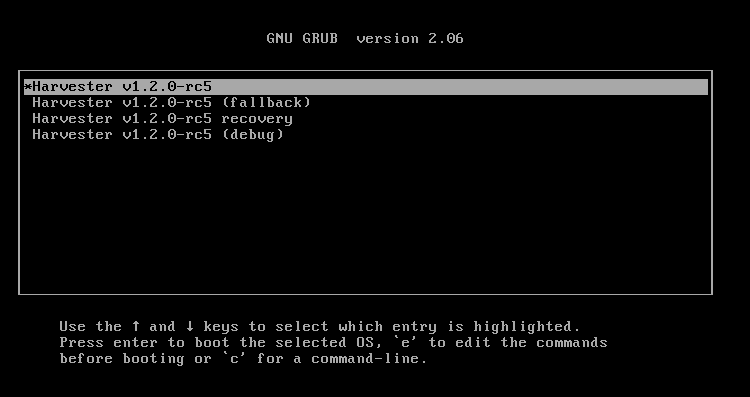
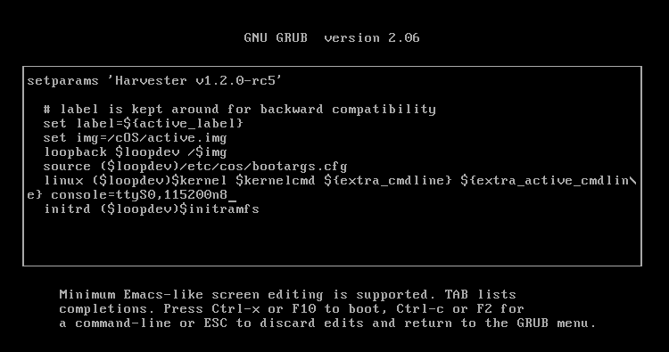

Operating System Issues
Harvester runs on an OpenSUSE-based OS. The OS is an artifact produced by the elemental-toolkit. The following sections contain information and tips to help users troubleshoot OS-related issues.
How to log in to a Harvester node
Users can log in to a Harvester node with the username rancher and the password or SSH keypair provided during installation.
The user rancher can execute privileged commands without entering a password:
# Run a privileged command rancher@node1:~> sudo blkid # Or become root rancher@node1:~> sudo -i node1:~ # blkid
How can I install packages? Why are some paths read-only?
The OS file system, like a container image, is image-based and immutable except in some directories.
We recommend using a toolbox container to run programs not packaged in the Harvester OS for debugging purposes. Please see this article to learn how to build and run a toolbox container.
The Harvester OS also provides a way to enable the read-write mode temporarily. Please follow the following steps:
|
Enabling read-write mode might break your system if files are modified. Please use it at your own risk. |
-
For version
v0.3.0, we need to apply a workaround first to make some directories non-overlaid after enabling read-write mode. On a running Harvester node, run the following command as root:cat > /oem/91_hack.yaml <<'EOF' name: "Rootfs Layout Settings for debugrw" stages: rootfs: - if: 'grep -q root=LABEL=COS_STATE /proc/cmdline && grep -q rd.cos.debugrw /proc/cmdline' name: "Layout configuration for debugrw" environment_file: /run/cos/cos-layout.env environment: RW_PATHS: " " EOF -
Reboot the system to GRUB menu. Press ESC to stay on the menu.
 -
Press
eon first menuentry. Appendrd.cos.debugrwto thelinux (loop0)$kernel $kernelcmdline. PressCtrl + xto boot the system.
How to permanently edit kernel parameters
|
The following steps are a workaround. Harvester will inform the community once a permanent resolution is in place. |
-
Re-mount state directory in rw mode:
# blkid -L COS_STATE /dev/vda2 # mount -o remount,rw /dev/vda2 /run/initramfs/cos-state
-
Edit the grub config file and append parameters to the
linux (loop0)$kernel $kernelcmdline. The following example adds anomodesetparameter:# vim /run/initramfs/cos-state/grub2/grub.cfg menuentry "${display_name}" --id cos { # label is kept around for backward compatibility set label=${active_label} set img=/cOS/active.img loopback $loopdev /$img source ($loopdev)/etc/cos/bootargs.cfg linux ($loopdev)$kernel $kernelcmd ${extra_cmdline} ${extra_active_cmdline} nomodeset initrd ($loopdev)$initramfs } -
Reboot for changes to take effect.
How to change the default GRUB boot menu entry
To change the default entry, first check the --id attribute of a menu entry. Grub menu entries are located in the following files:
-
/run/initramfs/cos-state/grub2/grub.cfg: Contains the default, fallback, and recovery entries -
/run/initramfs/cos-state/grubcustom: Contains the debug entry
In the following example, the id of the entry is debug.
# cat \
/run/initramfs/cos-state/grub2/grub.cfg \
/run/initramfs/cos-state/grubcustom
<...>
menuentry "${display_name} (debug)" --id debug {
search --no-floppy --set=root --label COS_STATE
set img=/cOS/active.img
set label=COS_ACTIVE
loopback loop0 /$img
set root=($root)
source (loop0)/etc/cos/bootargs.cfg
linux (loop0)$kernel $kernelcmd ${extra_cmdline} ${extra_passive_cmdline} ${crash_kernel_params}
initrd (loop0)$initramfs
}
You can configure the default entry by running the following commands:
# mount -o remount,rw /run/initramfs/cos-state # grub2-editenv /run/initramfs/cos-state/grub_oem_env set saved_entry=debug
If necessary, you can undo the change by running the command grub2-editenv /run/initramfs/cos-state/grub_oem_env unset saved_entry.
How to debug a system crash or hang
Collect crash log
If kernel panic traces are not recorded in the system log when a system crashes, one reliable way to locate the crash log is to use a serial console.
To enable outputting of kernel messages to a serial console, please use the following steps:
-
Boot the system to GRUB menu. Press ESC to stay on the menu.
-
Press
eon first menuentry. Appendconsole=ttyS0,115200n8to thelinux (loop0)$kernel $kernelcmdline. PressCtrl + xto boot the system.Adjust the console options according to your environment. Make sure to append the
console=string at the end of the line. -
Connect to the serial port to capture logs.
Collect crash dumps
For kernel panic crashes, you can use kdump to collect crash dumps.
By default, the OS is booted without the kdump feature enabled. Users can enable the feature by selecting the debug menuentry when booting, as in the following example:
When a system crashes, a crash dump will be stored in the /var/crash/<time> directory. Providing the crash dump to developers helps them to troubleshoot and resolve issues.